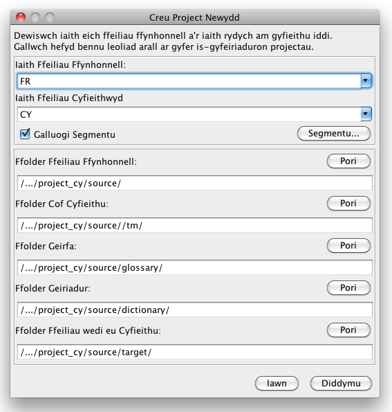
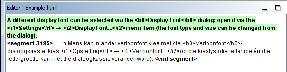

Mae'r canllaw cychwyn cyflym hwn yn canolbwyntio ar y nodweddion sylfaenol yn unig. Yn ddelfrydol, dylai defnyddwyr ddarllen y Llawlyfr Defnyddwyr er mwyn ymgyfarwyddo â phopeth sydd gan OmegaT i'w gynnig. Mae'r llwybrau byr a ddisgrifir yma'n defnyddio'r patrwm "ctrl+bysell" ond dylai defnyddwyr Mac ddarllen "cmd+bysell" yn lle hynny. Mae gan y fysell "cmd" unai label "command" arni neu farc afal ar fysellfyrddau Apple.
Mae sgrin OmegaT yn cynnwys un gofod wedi'i rannu'n dair ffenestr wahanol. Gellir newid maint pob un o'r rhain gyda'r llygoden. Ar y chwith mae'r Golygydd lle'r ydych yn teipio eich cyfieithiad. Ar y dde, uchod, mae'r ffenestr Cyfateb yn Fras, lle caiff cyfatebion yn y cof cyfieithu eu dangos. Oddi tan y ffenestr honno mae'r ffenestr Geirfa, lle caiff cyfatebion yn yr eirfa eu dangos.
Yn y ffenestr Golygu, mae OmegaT yn cyflwyno'r testun ffynhonnell wedi ei 'segmentu' yn frawddegau (neu baragraffau). Rydych chi'n cyfieithu'r segmentau hyn un ar y tro. Wrth i chi symud o un segment i'r nesaf caiff eich cyfieithiadau eu cofnodi yn y cof cyfieithu. Unwaith y bydd pob segment wedi'i gyfieithu (neu cyn hynny, os mynnwch), bydd OmegaT yn defnyddio'r cof cyfieithu i gynhyrchu'r dogfen(nau) a gyfieithwyd mewn ffolder darged o'r enw 'target'.
Mae OmegaT yn trefnu eich gwaith ar ffurf 'projectau cyfieithu'. [Ar gyfer pob project mae OmegaT yn creu set o ffolderi. Caiff rhain eu defnyddio i storio'r dogfennau ffynhonnell sydd i'w cyfieithu, y geirfaon y gallech fod eisiau eu defnyddio, ac unrhyw gofion cyfieithu yr hoffech ddefnyddio. Mae OmegaT hefyd yn creu ffolder o'r enw 'target' a fydd yn cynnwys y dogfennau terfynol wedi iddynt gael eu cyfieithu.
Dewiswch Project → Newydd... o'r ddewislen.
Porwch i'r ffolder lle'r hoffech chi gadw'r ffeiliau project, a theipio enw ar gyfer y project cyfieithu. Bydd yr enw hwn yn cael ei ddefnyddio ar gyfer y prif ffolder project; bydd holl ffeiliau'r project yn cael eu storio yn y ffolder hwn neu ei is-ffolderi.
Bydd OmegaT yn gofyn i chi gadarnhau neu newid y ffolderi project sydd i'w creu, gan ddefnyddio'r deialog isod:

Gallwch dderbyn lleoliad yr is-ffolderi, ond gwnewch yn siŵr yn gyntaf fod y codau iaith ar gyfer y cyfieithiad yn gywir. Dewiswch y cod iaith (2 lythyren) neu iaith-ac-ardal (2 + 2 lythyren) o'r ddewislen, neu teipiwch nhw i mewn â llaw. (gall y cod iaith fod yn 2 neu 3 llythyren) Gwnewch nodyn o leoliad yr is-ffolder 'target' (ar gyfer eich dogfennau wedi eu cyfieithu). Os hoffech chi i OmegaT segmentu fesul brawddeg yn hytrach na fesul "paragraff", mae'n syniad da i chi wirio'r rheolau segmentu.
Pan fyddwch chi'n clicio Iawn er mwyn derbyn gosodiadau'r project, bydd OmegaT yn gofyn i chi ddewis y dogfennau ffynhonnell yr hoffech chi eu cyfieithu ar gyfer eu mewnforio. Gallwch fewnforio ffeiliau unigol, neu fewnforio cyfeiriaduron cyfan gan gynnwys yr holl ffeiliau yn eu is-ffolderi. Os ydych chi wedi mewnforio'r dogfennau anghywir mewn camgymeriad, neu gormod ohonynt, gallwch gael gwared â nhw drwy eu symud neu eu dileu o ffolder Ffynhonnell eich project OmegaT (gan ddefnyddio rheolwr ffeiliau eich system [Windows Explorer etc.], er enghraifft).
I wirio eich rhestr o ffeiliau sydd i'w cyfieithu, edrychwch ar y ffenestr Ffeiliau'r Project (Dewislen: Project → Ffeiliau Project..., os nad yw'n agor yn awtomatig). Os oedd yn rhaid i chi newid Cynnwys y ffolder ffynhonnell ('source'), cofiwch ail-lwytho'r project yn gyntaf (Dewislen: Project → Ail-lwytho). Bydd OmegaT yn agor y ffeil cyntaf yn y rhestr project. Cofiwch, gall OmegaT ddim ond cyfieithu ffeiliau yn y fformatau isod os ydynt yn cyfateb i'r patrymau a ddiffiniwyd yn yr hidlau ffeiliau. Bydd unrhyw ffeiliau eraill yn cael eu hanwybyddu.
Unwaith i chi ddiffinio'r project a'r ffeiliau rydych am eu cyfieithu, bydd OmegaT yn agor y ffeil gyntaf yn y Golygydd. Caiff y segment cyntaf ei amlygu mewn gwyrdd; caiff copi o'r testun ffynhonnell ei ddangos oddi tanodd, yn y maes targed. (Ar hyn o bryd, bydd pob testun oddi allan i'r maes targed yn cael ei warchod ac ni fydd modd ei olygu.) Rhaid teipio eich cyfieithiad rhwng y tagiau <segment 0001> a <end segment>,gan ysgrifennu dros y testun ffynhonnell Pwyswch "ENTER" i symud ymlaen i'r segment nesaf. Nodyn:
Pan fyddwch chi'n gwasgu "ENTER", mae sawl peth yn digwydd yn y cefndir: mae OmegaT ychwanegu'r pâr o segmentau (y segment ffynhonnell a'i gyfieithiad) i'r cof cyfieithu, a bydd hefyd yn cyfieithu unrhyw segmentau sydd yn union yr un fath yn y ffeiliau project eraill. Mae hefyd yn sganio'r cof cyfieithu a'r eirfa gan chwilio am gyfatebion ar gyfer y segment nesaf sydd heb ei gyfieithu.
Os yw OmegaT yn dod o hyd i unrhyw gyfatebion bras (30% neu uwch - gweler y llawlyfr) ar gyfer y segment nesaf, mae'n dangos y cyfatebion hyn yn y Ffenestr Cyfatebion. Mae'r segment sy'n cyfateb orau wedi'i rag-ddewis yn y Ffenestr Cyfatebion. I fewnosod cyfatebion cof cyfieithu o'r Ffenestr Cyfatebion i mewn yn eich maes targed, gellwch ddefnyddio bysellau brys:
Ctrl+I i osod y segment a ragddewiswyd yn safle'r cyrchwr, neu...Ctrl+R ti ysgrifennu dros y segment cyfan gyda segment cyfatebol a ragddewiswyd.Os oes sawl segment cyfatebol wedi eu darganfod a bod yn well gennych beidio a defnyddio'r un a ragddewiswyd:
Ctrl+2 i ddewis yr ail ddewis, Ctrl+3 i ddewis y trydydd, etc.Ctrl+I or Ctrl+R, fel a ddisgrifiwyd uchod.(Gallwch ddweud wrth OmegaT am fewnosod unrhyw segment sy'n cyfateb yn uwch chanran benodol i mewn yn y maes targed yn awtomatig pan fydd y segment yn agor. Gosodwch y dewis hwn gan ddefnyddio Dewisiadau→ Ymddygiad Golygu...
Bydd cyfatebion termau yn y geirfaoedd a geiriaduron, a all eich bod wedi eu cynnwys yn y project, gael eu harddangos yn y ffenestri geirfa a geiriadur.
Mae OmegaT yn darparu amrediad grymus o nodweddion chwilio. Agorwch y ffenestr Chwilio drwy bwyso Ctrl+F a theipio'r gair neu ymadrodd yr hoffech chi chwilio amdano yn y blwch "Chwilio am". Gallwch hefyd ddewis gair neu ymadrodd yn y maes golygu (testun targed y segment gweithredol) a phwyso Ctrl+F. Caiff y gair neu'r ymadrodd ei osod yn y blwch "Chwilio am" yn awtomatig yn yr achos hwn.
Yn ffenestr Google Translate, byddwch yn derbyn cynnig cyfieithiad o'r segment cyfredol yn awtomatig. Gallwch ei gynnwys gyda Ctrl+M i'r segment targed
Pan fyddwch wedi cyfieithu pob un o'r segmentau (neu cyn hynny, hyd yn oed), bydd OmegaT yn diweddaru'r dogfen(nau) targed gan ddefnyddio'r cyfieithiadau sydd wedi'u storio yn y cof cyfieithu. I wneud hynny, dewiswch Project → Creu Dogfennau wedi eu Cyfieithu... o'r ddewislen. Bydd OmegaT yn adeiladu fersiynau wedi'u cyfieithu o bob dogfen sydd yn y ffolder 'source' y mae modd eu cyfieithu, p'un ai ydyn nhw wedi eu cyfieithu yn llawn neu beidio. Caiff y ffeiliau sydd wedi eu cyfieithu yn llawn neu'n rhannol eu cadw yn ffolder 'target' y project. Er mwyn cwblhau eich project, agorwch y ffeiliau targed yn eu rhaglennu priodol (porwr, prosesydd geiriau...) er mwyn gwirio cynnwys a fformatio eich cyfieithiad. Gallwch ddychwelyd i OmegaT i wneud unrhyw gywiriadau angenrheidiol; peidiwch ag anghofio ail-greu'r dogfennau cyfieithiedig wedi hynny.
Mae OmegaT yn sicrhau nad yw fformatio'r ddogfen ffynhonnell (trwm, italig etc.) yn cael ei golli drwy ei marcio â thagiau arbennig</ao>. Mae tagiau OmegaT wedi eu ffurfio gan ddefnyddio un neu fwy o lythrennau sy'n cael eu dilyn gan un neu fwy o ddigidau ac maent weithiau'n defnyddio'r nod "/" er enghraifft: <f0>, </f0> <br>, </s2> etc.). Rhaid trin y tagiau hyn yn ofalus gan sicrhau eu bod wedi'u cynnwys yn gywir yn y segmentau targed. (gw. gweithredoedd tagiau).
Yn yr enghreifftiau hyn rydym wedi amlygu'r tagiau i'w gwneud yn haws i'w gweld, ond yn OmegaT ni fyddant wedi'u hamlygu. Bydd tagiau HTML, wedi eu hamlygu mewn blue, yn cael eu hawybyddu gan OmegaT gan eu bod yn amgylchynnu'r segment yn llwyr. Rhaid i'r tagiau amlygir mewn gwyrdd,gael eu trin gan OmegaT gan eu bod o fewn y segment Dyma enghraifft o segment mewn HTML:
<p>Gellir dewis ffont arddangos gwahanol yn y deialog <b>Ffont Arddangos</b>. Mae wedi leoli yn <i>Dewisiadau</i> → <i>Eitem dewislen </i>Ffont Arddangos.... Gellir newid math a maint y ffont yn y deialog hwnnw.</p>
Dyma sut y bydd OmegaT yn ei ddangos, yn Afrikaans:

Pan fydd OmegaT yn creu'r ddogfen wedi'i chyfieithu, bydd yr HTML yn edrych fel hyn:
Nid yw OmegaT yn adnabod tagio gwallus yn awtomatig yn y ddogfen a gyfieithwyd. Cyn i chi anfon y ddogfen i'ch cleient, dylech felly wirio eich tagiau am wallau.
Dewiswch Offer → Dilysu Tagiau o'r ddewislen. [Bydd tabl yn ymddangos yn dangos y segmentau lle nad yw'r tagiau ffynhonnell a'r tagiau targed yn cyfateb. Cliciwch ar y rhif segment. Cewch eich cludo'n awtomatig i'r segment gwallus yn y Golygydd, lle gallwch gywiro'r tagio. Pwyswch Enter i ddilysu'r segment a gwirio'r cywiriad drwy bwyso Control-T eto.
Mewn rhai achosion gall gwallau tagio rwystro'r ddogfen rhag agor. Dylech felly sicrhau eich bod wedi gwirio unrhyw wallau tagio cyn creu'r ffeiliau wedi'u cyfieithu. Yn olaf, dylech bob tro wirio'r fformatio terfynol drwy agor y ddogfen a gyfieithwyd yn rhaglen gysylltiedig briodol.